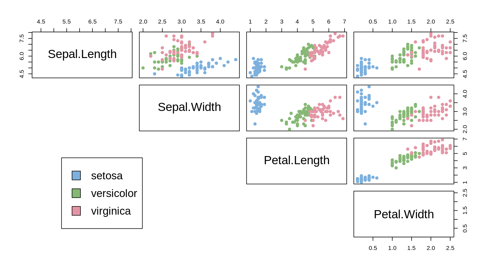
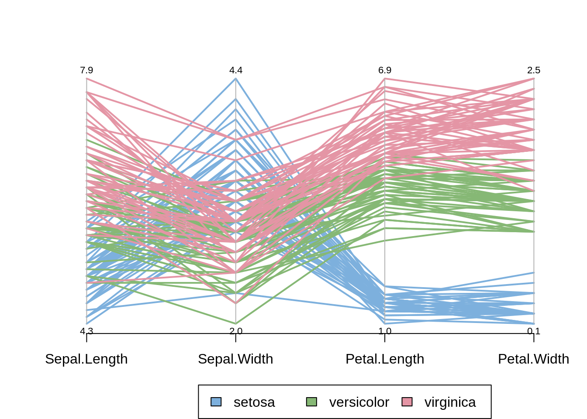
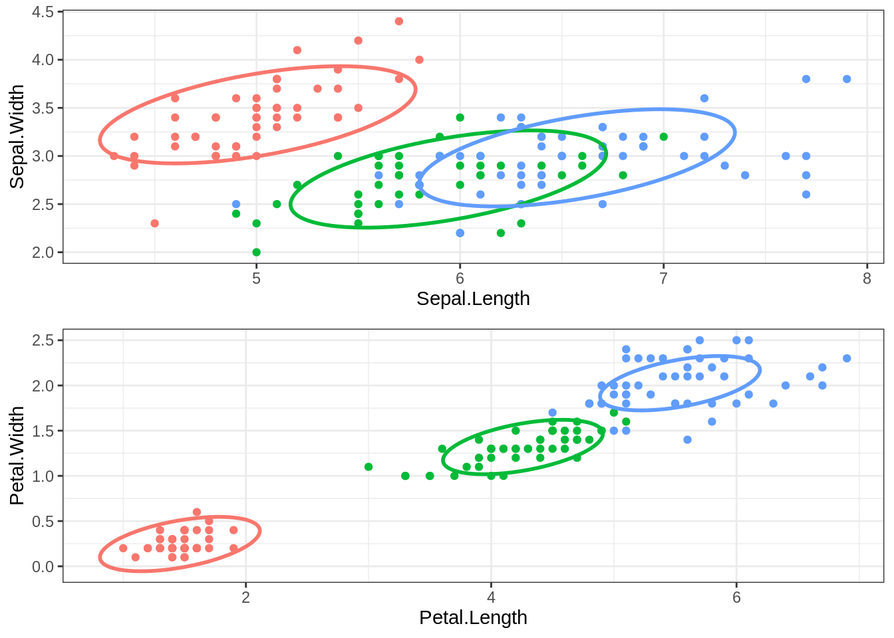

library(tidyverse)
library(gridExtra)
library(mixtools)
theme_set(theme_bw())Mixture Models: an example
An Example Study
Preliminary
Functions from R-base and stats (preloaded) are required plus packages from the tidyverse for data representation and manipulation. We also need the packages mixtools and mclust, which are commonly used to fit mixture models in R.
1 The Iris data
The famous (Fisher’s or Anderson’s) iris data set gives the measurements in centimeters of the variables sepal length and width and petal length and width, respectively, for 50 flowers from each of 3 species of iris. The species are Iris setosa, versicolor, and virginica. (from ?iris).
The Iris flower data set is a nice example for learning supervised classification algorithms, and is known as a difficult case for unsupervised learning.
iris <- datasets::iris
head(iris) Sepal.Length Sepal.Width Petal.Length Petal.Width Species
1 5.1 3.5 1.4 0.2 setosa
2 4.9 3.0 1.4 0.2 setosa
3 4.7 3.2 1.3 0.2 setosa
4 4.6 3.1 1.5 0.2 setosa
5 5.0 3.6 1.4 0.2 setosa
6 5.4 3.9 1.7 0.4 setosaspecies_labels <- iris[,5]
species_col <- c("#7DB0DD","#86B875","#E495A5")
pairs(iris[,-5], col = species_col[species_labels],
lower.panel = NULL, cex.labels=2, pch=19, cex = 1)
par(xpd = TRUE)
legend(x = 0.1, y = 0.4, cex = 1.2,
legend = as.character(levels(species_labels)), fill = species_col)
We can see that the Setosa species are distinctly different from Versicolor and Virginica (they have lower petal length and width). But Versicolor and Virginica cannot easily be separated based on measurements of their sepal and petal width/length.
The same conclusion can be made by looking at the parallel coordinates plot of the data:
# https://cran.r-project.org/web/packages/dendextend/vignettes/Cluster_Analysis.html
MASS::parcoord(iris[,-5], col = species_col[species_labels], var.label = TRUE, lwd = 2)
# Add a legend
par(xpd = TRUE)
legend(x = 1.75, y = -.25, cex = 1,
legend = as.character(levels(species_labels)),
fill = species_col, horiz = TRUE)
1.1 Supervised classification
1.1.1 Logistic regression for a binary variable
Let y_i be a binary response that take its values in \{0,1\} and let c_{i1}, \ldots, c_{iM} be M explanatory variables (or predictors).
Formally, the logistic regression model is that
\begin{aligned} \log\left(\frac{\mathbb{P}(y_i=1)}{\mathbb{P}(y_i=0)}\right) &= \log\left(\frac{\mathbb{P}(y_i=1)}{1 - \mathbb{P}(y_i=1)}\right) \\ &= \beta_0 + \sum_{m=1}^M \beta_m c_{im} \end{aligned} Then, \mathbb{P}(y_i=1) = \frac{1}{1+ e^{-\beta_0 - \sum_{m=1}^M \beta_m c_{im}}}
myiris <- cbind(iris,virginica=ifelse(iris$Species=="virginica",1,0))
myiris$virginica [1] 0 0 0 0 0 0 0 0 0 0 0 0 0 0 0 0 0 0 0 0 0 0 0 0 0 0 0 0 0 0 0 0 0 0 0 0 0
[38] 0 0 0 0 0 0 0 0 0 0 0 0 0 0 0 0 0 0 0 0 0 0 0 0 0 0 0 0 0 0 0 0 0 0 0 0 0
[75] 0 0 0 0 0 0 0 0 0 0 0 0 0 0 0 0 0 0 0 0 0 0 0 0 0 0 1 1 1 1 1 1 1 1 1 1 1
[112] 1 1 1 1 1 1 1 1 1 1 1 1 1 1 1 1 1 1 1 1 1 1 1 1 1 1 1 1 1 1 1 1 1 1 1 1 1
[149] 1 1iris.glm <- glm(virginica ~ Sepal.Length + Sepal.Width + Petal.Length + Petal.Width, family=binomial, data=myiris)
summary(iris.glm)
Call:
glm(formula = virginica ~ Sepal.Length + Sepal.Width + Petal.Length +
Petal.Width, family = binomial, data = myiris)
Deviance Residuals:
Min 1Q Median 3Q Max
-2.01105 -0.00065 0.00000 0.00048 1.78065
Coefficients:
Estimate Std. Error z value Pr(>|z|)
(Intercept) -42.638 25.708 -1.659 0.0972 .
Sepal.Length -2.465 2.394 -1.030 0.3032
Sepal.Width -6.681 4.480 -1.491 0.1359
Petal.Length 9.429 4.737 1.990 0.0465 *
Petal.Width 18.286 9.743 1.877 0.0605 .
---
Signif. codes: 0 '***' 0.001 '**' 0.01 '*' 0.05 '.' 0.1 ' ' 1
(Dispersion parameter for binomial family taken to be 1)
Null deviance: 190.954 on 149 degrees of freedom
Residual deviance: 11.899 on 145 degrees of freedom
AIC: 21.899
Number of Fisher Scoring iterations: 12as.vector(round(fitted(iris.glm))) [1] 0 0 0 0 0 0 0 0 0 0 0 0 0 0 0 0 0 0 0 0 0 0 0 0 0 0 0 0 0 0 0 0 0 0 0 0 0
[38] 0 0 0 0 0 0 0 0 0 0 0 0 0 0 0 0 0 0 0 0 0 0 0 0 0 0 0 0 0 0 0 0 0 0 0 0 0
[75] 0 0 0 0 0 0 0 0 0 1 0 0 0 0 0 0 0 0 0 0 0 0 0 0 0 0 1 1 1 1 1 1 1 1 1 1 1
[112] 1 1 1 1 1 1 1 1 1 1 1 1 1 1 1 1 1 1 1 1 1 1 0 1 1 1 1 1 1 1 1 1 1 1 1 1 1
[149] 1 1iris.glm$linear.predictors[71] 71
-0.3853463 sum(cbind(1,iris[71,1:4])*iris.glm$coefficients)[1] -0.3853463iris.glm$fitted.values[71] 71
0.4048381 1/(1+exp(-iris.glm$linear.predictors[71])) 71
0.4048381 1.1.2 Logistic regression with more than two classes
Assume now that y_i takes its values in \{1,2\ldots,L\}. The logistic regression model now writes
\begin{aligned} \log\left(\frac{\mathbb{P}(y_i=k)}{\mathbb{P}(y_i=L)}\right) &= \beta_{k0} + \sum_{m=1}^M \beta_{k m} c_{im} \quad , \quad k=1,2,\ldots,L \end{aligned} where we set, for instance, \beta_{L0}=\beta_{L1}=\ldots=\beta_{LM}=0 for identifiabilty reason. Then,
\mathbb{P}(y_i=k) = \frac{e^{\beta_{k0} + \sum_{m=1}^M \beta_{k m} c_{im}}} {\sum_{j=1}^K e^{\beta_{j0} + \sum_{m=1}^M \beta_{j m} c_{im}}} \quad , \quad k=1,2,\ldots,L
library(VGAM)
myiris <- cbind(myiris,versicolor=ifelse(iris$Species=="versicolor",1,0))
myiris <- cbind(myiris,setosa=ifelse(iris$Species=="setosa",1,0))
head(myiris) Sepal.Length Sepal.Width Petal.Length Petal.Width Species virginica
1 5.1 3.5 1.4 0.2 setosa 0
2 4.9 3.0 1.4 0.2 setosa 0
3 4.7 3.2 1.3 0.2 setosa 0
4 4.6 3.1 1.5 0.2 setosa 0
5 5.0 3.6 1.4 0.2 setosa 0
6 5.4 3.9 1.7 0.4 setosa 0
versicolor setosa
1 0 1
2 0 1
3 0 1
4 0 1
5 0 1
6 0 1iris.vglm <- vglm(cbind(virginica,versicolor,setosa) ~ Sepal.Length +
Sepal.Width + Petal.Length + Petal.Width, family=multinomial,
data=myiris)
summary(iris.vglm)
Call:
vglm(formula = cbind(virginica, versicolor, setosa) ~ Sepal.Length +
Sepal.Width + Petal.Length + Petal.Width, family = multinomial,
data = myiris)
Coefficients:
Estimate Std. Error z value Pr(>|z|)
(Intercept):1 -35.365 19432.051 -0.002 0.999
(Intercept):2 7.272 19432.034 0.000 1.000
Sepal.Length:1 -9.242 5790.844 -0.002 0.999
Sepal.Length:2 -6.777 5790.843 NA NA
Sepal.Width:1 -12.569 2888.841 -0.004 0.997
Sepal.Width:2 -5.889 2888.838 NA NA
Petal.Length:1 22.630 4446.221 NA NA
Petal.Length:2 13.201 4446.219 0.003 0.998
Petal.Width:1 33.919 7133.176 0.005 0.996
Petal.Width:2 15.633 7133.169 0.002 0.998
Names of linear predictors: log(mu[,1]/mu[,3]), log(mu[,2]/mu[,3])
Residual deviance: 11.8985 on 290 degrees of freedom
Log-likelihood: -5.9493 on 290 degrees of freedom
Number of Fisher scoring iterations: 21
Warning: Hauck-Donner effect detected in the following estimate(s):
'Sepal.Length:2', 'Sepal.Width:2', 'Petal.Length:1'
Reference group is level 3 of the responseiris.vglm@predictors[71,]log(mu[,1]/mu[,3]) log(mu[,2]/mu[,3])
39.56470 39.95004 c(sum(cbind(1,iris[71,1:4])*iris.vglm@coefficients[c(1,3,5,7,9)]),
sum(cbind(1,iris[71,1:4])*iris.vglm@coefficients[c(2,4,6,8,10)]))[1] 39.56470 39.95004iris.vglm@fitted.values[71,] virginica versicolor setosa
4.048381e-01 5.951619e-01 2.657985e-18 lp71 <- as.vector(c(iris.vglm@predictors[71,],0))
exp(lp71)/sum(exp(lp71))[1] 4.048381e-01 5.951619e-01 2.657985e-18head(fitted(iris.vglm)) virginica versicolor setosa
1 5.895408e-39 3.817290e-12 1
2 2.007661e-35 2.812349e-10 1
3 1.073625e-36 8.972486e-11 1
4 8.785319e-34 4.462530e-09 1
5 4.226744e-39 4.171875e-12 1
6 1.894589e-36 5.671292e-11 1Percentage of missclassified flowers: ::: {.cell hash=‘map566-doc-mixture-models-example_cache/html/unnamed-chunk-20_f635000c2b1f9764403891aafda71b91’}
# Now we use 'fitted.iris' as the model-based classifications
# of which flower is of each type. How does this compare
# to the real types?
rclass.iris <- ifelse(apply(abs(round(fitted(iris.vglm)) - myiris[,6:8]),1,sum)==0,1,0)
(1-mean(rclass.iris))*100[1] 1.333333:::
1.2 Non supervised classification
Ignoring the known labels (species) of theFisher Iris data, let us identify three clusters with the k-means method and compute the missclassification rate: ::: {.cell hash=‘map566-doc-mixture-models-example_cache/html/unnamed-chunk-22_293720867d9995a675863230e75b155e’}
set.seed(1234) # labels are the original ones with this seed (avoid permutation)
r.km <- kmeans(iris[,1:4], centers=3)
mean(r.km$cluster!=as.numeric(iris$Species))*100[1] 10.66667:::
Let us know fit a mixture of three multidimensional Gaussian distributions. The model assumes the same variance covariance matrix for the three distributions (
library(mixtools)
c0 <- list(r.km$centers[1,], r.km$centers[2,], r.km$centers[3,])
r.em <- mvnormalmixEM(iris[,1:4], mu=c0, arbvar=FALSE)number of iterations= 25 ::: Let us display the estimated parameters of the mixture: ::: {.cell hash=‘map566-doc-mixture-models-example_cache/html/unnamed-chunk-26_0c5f203aecb1065b9959c2ebeeebc57d’}
r.em$lambda[1] 0.3333333 0.3296062 0.3370605r.em$mu[[1]]
[1] 5.006 3.428 1.462 0.246
[[2]]
[1] 5.942320 2.760760 4.258683 1.319194
[[3]]
[1] 6.574610 2.980780 5.539001 2.024915r.em$sigma [,1] [,2] [,3] [,4]
[1,] 0.26393508 0.08985149 0.16965605 0.03933917
[2,] 0.08985149 0.11194889 0.05112334 0.02998048
[3,] 0.16965605 0.05112334 0.18652664 0.04197301
[4,] 0.03933917 0.02998048 0.04197301 0.03971404:::
For each flower, the estimated label maximizes the posterior distribution. We can then compute the missclassification rate: ::: {.cell hash=‘map566-doc-mixture-models-example_cache/html/unnamed-chunk-28_dd588bfaef396ab9d93f5bb40a951260’}
post <- r.em$posterior
r.em$class <- sapply(seq(nrow(post)), function(i) { j <- which.max(as.vector(post[i,])) })
mean(r.em$class!=as.numeric(iris$Species))*100[1] 2:::
Let us plot the original data with the three distributions estimated with EM ::: {.cell hash=‘map566-doc-mixture-models-example_cache/html/unnamed-chunk-30_1d7f0dc5ae26c3356dab036d07c45143’}
detach(package:mixtools)
library(ellipse)
library(gridExtra)
Species <- levels(iris$Species)
j1=1; j2=2
df_ell <- data.frame()
for(g in (1:3)){
# M=r.em$sigma[[g]][c(j1,j2),c(j1,j2)]
M=r.em$sigma[c(j1,j2),c(j1,j2)]
c=r.em$mu[[g]][c(j1,j2)]
df_ell <- rbind(df_ell, cbind(as.data.frame(ellipse(M,centre=c, level=0.68)), group=Species[g]))
}
pl1 <- ggplot(data=iris) + geom_point(aes_string(x=iris[,j1],y=iris[,j2], colour=iris[,5])) +
theme(legend.position="none") +xlab(names(iris)[j1])+ylab(names(iris)[j2]) +
geom_path(data=df_ell, aes(x=x, y=y,color=group), size=1, linetype=1)
j1=3; j2=4
df_ell <- data.frame()
for(g in (1:3)){
# M=r.em$sigma[[g]][c(j1,j2),c(j1,j2)]
M=r.em$sigma[c(j1,j2),c(j1,j2)]
c=r.em$mu[[g]][c(j1,j2)]
df_ell <- rbind(df_ell, cbind(as.data.frame(ellipse(M,centre=c, level=0.68)), group=Species[g]))
}
pl2 <- ggplot(data=iris) + geom_point(aes_string(x=iris[,j1],y=iris[,j2], colour=iris[,5])) +
theme(legend.position="none") +xlab(names(iris)[j1])+ylab(names(iris)[j2]) +
geom_path(data=df_ell, aes(x=x, y=y,color=group), size=1, linetype=1)
grid.arrange(pl1, pl2)
:::
This Shiny app allows one to select the two variables to plot.